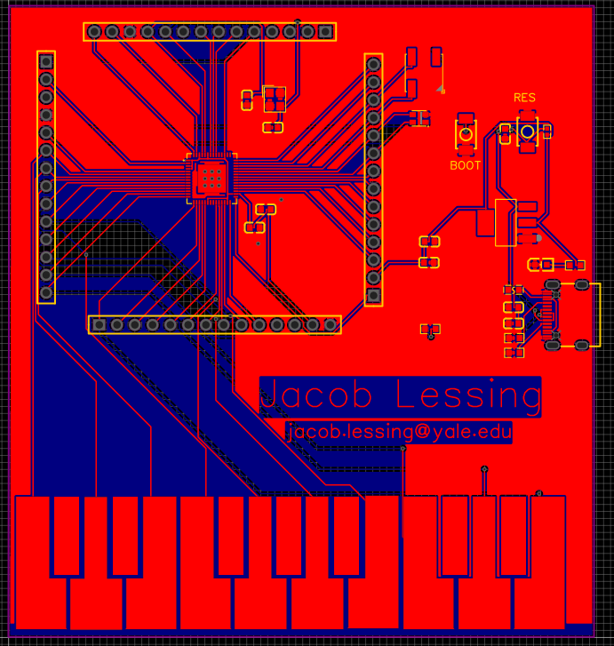

PCB Piano

Challenge
I thought it would be fun to create a playable piano that fits in my pocket.
Solution Summary
I designed a PCB so that touching the exposed pads plays a note from the on-board speaker.
Schematic
The most important choice in designing the PCB is picking the chip to be at it's heart. I chose the ESP32-S2. It's fast, inexpensive, and most importantly to this project, it has capactive touch sensing ability. This lets it detect when a piano key is pressed. I then picked "life-support" components for the chip and planned how they'd all be wired together by making the schematic pictured above.
Unfortunately, I mistakenly picked a version of the ESP32 without built-in SRAM, breaking the whole device. A new version is on order (September 2022) and it should be fixed soon. Engineering is iterative!
Routing
The final design step is to route the wires (called traces) connecting the components, then sending it off for manufacturing at a foundry in China. The final cost of each board is a little over $5.
Learning
As part of learning PCB Design best practices for this project, I completed Altium's PCB Basic Design Course